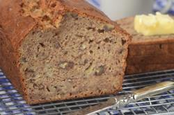

|  |
- 1 3/4 cups (225 grams) all-purpose flour
- 3/4 cup (150 grams) granulated white sugar
- 1 teaspoon (4 grams) baking powder
- 1/4 teaspoon (1 gram) baking soda
- 1/4 teaspoon (1 gram) salt
- 1 teaspoon ground cinnamon
- 1 cup (120 grams) walnuts or pecans, coarsely chopped
- 2 large (100 grams) eggs, lightly beaten
- 1/2 cup (113 grams) unsalted butter, melted and cooled
- 1 1/2 cups (360 ml) (375 grams) mashed bananas (about 3 large ripe bananas)
- 1 teaspoon (4 grams) pure vanilla extract
|